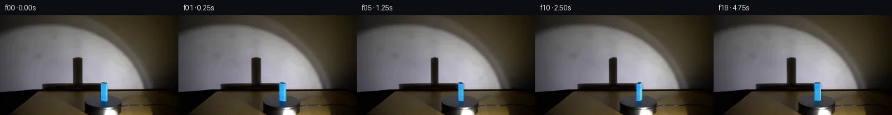

![首帧]()

Round 00
2026-11-05T03:16:02.424602+00:00像素候选变化代码 +262/−0inspection 更新
pixels 70527e31910f35e6 · code ca417b3f64aac331
查看本轮 generate.py 真实 diff
--- previous/generate.py
+++ current/generate.py
@@ -0,0 +1,262 @@
+"""PixelWorld continuation, using only local pixels and an analytic cuboid.
+No external renderer, image model, image-view tool, or reference image.
+"""
+from pathlib import Path
+import json
+import numpy as np
+from PIL import Image, ImageDraw
+from scipy.ndimage import gaussian_filter, map_coordinates
+from scipy.spatial import ConvexHull
+import cv2
+from artifact_io import save
+
+ROOT = Path(__file__).resolve().parent
+W, H, SS = 256, 144, 6
+SOURCE = np.array(Image.open(ROOT / 'first_frame.png').convert('RGB'))
+SRC = SOURCE.astype(np.float64)
+YY, XX = np.mgrid[:H, :W].astype(np.float64)
+THETA0 = np.deg2rad(25.0)
+SPEED = 36.0
+BW, BD, BH = 8.0, 5.0, 25.0
+CX, CY, TILT = 149.3, 122.8, .28
+CORNERS = np.array([[-BW/2,-BD/2], [BW/2,-BD/2], [BW/2,BD/2], [-BW/2,BD/2]])
+
+
+def rotate(xy, theta):
+ # Positive theta is clockwise from above. In the image's ground plane,
+ # a point initially to the right moves toward the near/bottom edge.
+ c, s = np.cos(theta), np.sin(theta)
+ return xy @ np.array([[c,-s],[s,c]])
+
+
+def object_vertices(theta):
+ p = rotate(CORNERS, theta)
+ bottom = np.column_stack([CX+p[:,0], CY-TILT*p[:,1]])
+ top = bottom - np.array([0., BH])
+ return p, bottom, top
+
+
+def polygon_mask(vertices, blur=0.):
+ im = Image.new('L', (W*SS,H*SS),0)
+ ImageDraw.Draw(im).polygon([tuple(v*SS) for v in vertices], fill=255)
+ a = np.asarray(im.resize((W,H),Image.Resampling.BOX),dtype=float)/255
+ return gaussian_filter(a,blur) if blur else a
+
+
+def reconstruct():
+ bg = SRC.copy()
+ # Wall behind the initial upright shadow: row-specific interpolation.
+ # This retains the spotlight's existing vertical luminance profile.
+ for y in range(59,100):
+ left = SRC[y,100:104].mean(0)
+ right = SRC[y,120:124].mean(0)
+ for x in range(104,120):
+ u=(x-101.5)/(121.5-101.5)
+ bg[y,x]=left*(1-u)+right*u
+ wall_rect=(XX>=104)&(XX<120)&(YY>=59)&(YY<100)
+ # Determine the photographic shadow opacity from the reconstructed wall.
+ tint=np.array([18.,12.,4.])
+ denom=np.maximum(bg.mean(2)-tint.mean(),15)
+ alpha=np.clip((bg.mean(2)-SRC.mean(2))/denom,0,1)*wall_rect
+ alpha[alpha<.025]=0
+ # Keep the measured photographic penumbra and fine texture of the shadow.
+ shadow_rgb=np.array([23.,18.,10.])
+ for y in range(97,134):
+ # Filling the only narrow strip occupied by the blue object/reflection.
+ # Above the table edge it straddles the platform shadow/wall junction.
+ if y<116:
+ l=SRC[y,140:144].mean(0)
+ r=SRC[y,156:160].mean(0)
+ else:
+ l=SRC[y,137:143].mean(0)
+ r=SRC[y,157:162].mean(0)
+ for x in range(143,156):
+ u=(x-142.)/14.
+ bg[y,x]=l*(1-u)+r*u
+ return bg,alpha,shadow_rgb
+
+
+BG, SHADOW_ALPHA, SHADOW_RGB = reconstruct()
+# Fine platform texture is separate from its stationary lighting profile.
+PLATFORM_E = ((XX-147.0)/25.0)**2+((YY-124.2)/8.2)**2
+PLATFORM_MASK = np.clip((1-PLATFORM_E)*8,0,1)
+PLATFORM_MASK *= ((YY>=116)&(YY<=132))
+PLATFORM_MEAN = gaussian_filter(BG, (1.1,1.1,0))
+PLATFORM_TEXTURE = (BG-PLATFORM_MEAN)*PLATFORM_MASK[...,None]
+PLATFORM_TEXTURE=np.clip(PLATFORM_TEXTURE,-2.0,2.0)
+# Original blue front: a small, unoccluded sample, resampled as a face texture.
… diff truncated; 175 more lines …